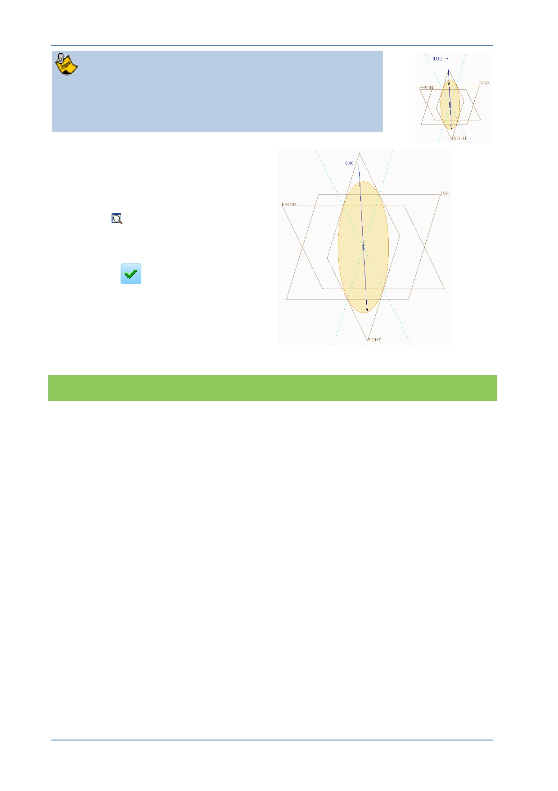

PTC Academic Program
Depending on how large your circle was first sketched, the
resized circle may appear very small within the graphics
area. This is common for the first sketch created in a new
model and as you will see, it is nothing to worry about.
3. Refitting the sketch in the
graphics area.
In the Graphics toolbar click
Refit
to refit the sketch
within the graphics area.
4. Click OK
from the Close
group of the Sketch tab to
complete the sketch and
return to the Extrude
dashboard.
What have you learned?
Sketch – Center and Point circle.
Dimensions – Changing value.
Refit model to fit graphics window.
© 2012 PTC
Creo Parametric 2.0 Primer
Page 49